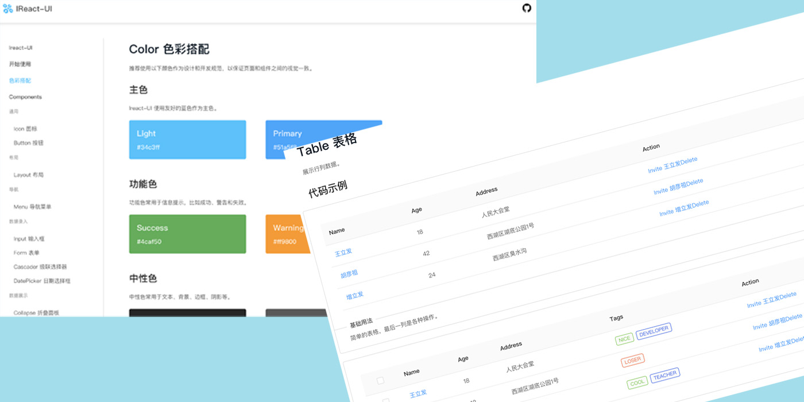
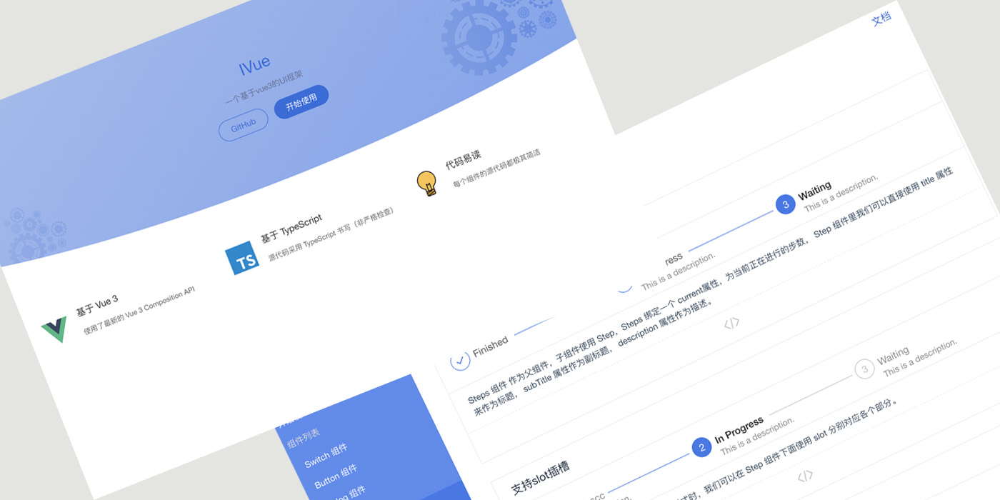

Portfolio
-
LiFa-UI框架
- LiFa-UI框架是一个使用vue配合es6和sass开发，使用Karma + Mocha做单元测试，最后通过npm发布和parcel打包的UI框架，官网是使用VuePress构建，目前已经实现了Button/Tabs/Input/Grid/Layout/Popover/Cascader等常用组件，用户可以通过命令行npm install lifa-ui来安装使用它。
- 技术栈： Vue + Es6 + Sass + Npm + Karma + Mocha + Parcel + Svg + VuePress + Vue-cli
- 这个项目作为自己的Vue的第一个实战项目，遇到了很多问题，中间我都有把各个组件实现的过程写在博客里： 链接博客专栏
- 由于刚开始接触vue相关，尤其对于单元测试不熟，所以中间有几个单元测试没有找到办法处理，个人认为对于vue造轮子项目最大的难点也就是各种单元测试的处理，以及你要有很好的js和css基本功。
- 在对vue文档看过之后已经自己亲自上手之后对vue的内容及项目中遇到的问题写了相关的参考笔记： 我的vue参考指南
IReact-UI框架
- IReact-UI框架是一个使用React最新的Hooks配合Es6、Ts和Sass以及Webpack4开发，使用Jest做单元测试和Circle CI做持续集成 ，最后通过npm发布的UI框架，目前已经实现了Icon/Button/Layout/Menu/Input/Form/Cascader/DatePicker/ Collapse/Tree/Tableg等常用组件，用户可以通过命令行npm install ireact-ui来安装使用它。
- 技术栈： React Hooks + React router + Ts + Es6 + Sass + Npm + Jest+ Webpack4 + Circle Ci + Svg
- 在做IReact-UI框架中遇到的问题以及相关笔记： react深入浅出
IVue3-UI
- IVue3-UI是一个基于Vue3和Ts以及Vite开发的UI框架，这款组件库其实是为了学习最新的vue3和巩固自己的基础而写的，通过rollup对库文件进行了打包，我们可以通过命令行使用npm install ivue3-ui来安装使用它。目前已经实现了Switch/Button/Dialog/Tabs/Steps组件，其他组件还在持续开发中。
- 技术栈： Vue3 + Vite + Ts + Es6 + Sass + Npm + Rollup + Svg
- 在写IVue3-UI框架时遇到的问题和相关笔记： vue3学习指南